Abalone, Los Angeles’ Forgotten Neighbor
On the loss of collective memory, the preservation of heritage, and remembering what the coast has not forgotten.
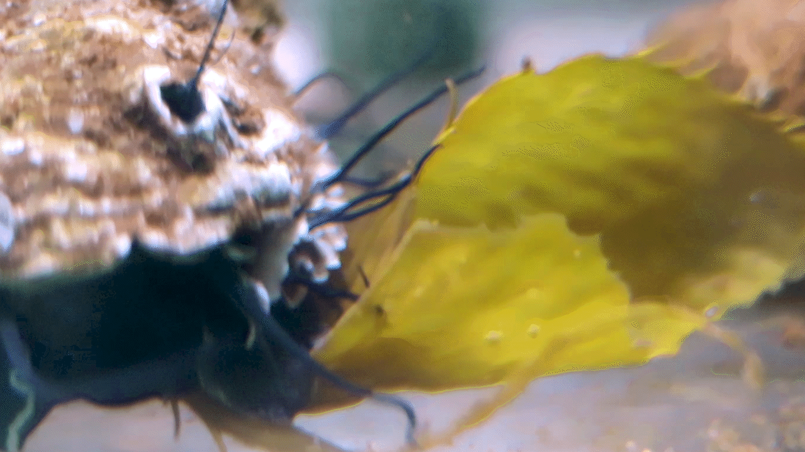
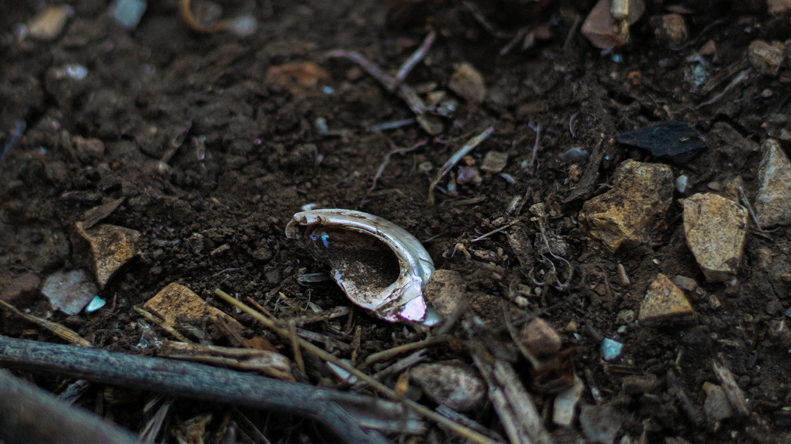
What comes to mind when you think of the word, “abalone?” You may think of an otherworldly, stunning iridescent shell, lined by a curve of small holes along its interior. Perhaps a delicious shellfish comes to mind. Chances are, you may not be acquainted with the remarkably charming marine creature that calls this shell home! Meet the abalone- our lovely marine neighbor that flourished along the Los Angeles coast a century ago.
What is the abalone?
What is the abalone?
The abalone is an invertebrate, or an animal that functions without a backbone, and more
specifically a mollusk—which means it is closely related to the snail, mussel, and octopus.
California is home to 7 native abalone species: red, green, pink, white, black, flat and pinto
abalone. They are distributed all along the coast, but Los Angeles holds a unique position in that
all seven of these species call Southern California home.
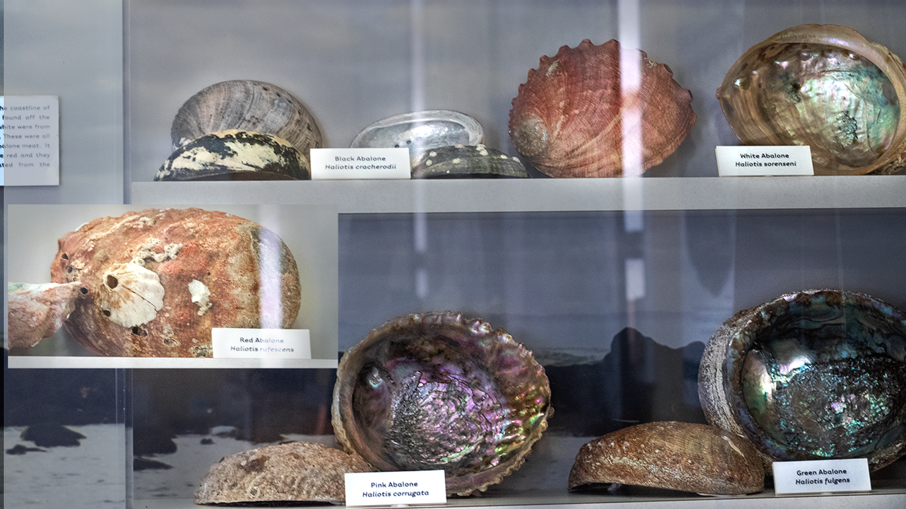
These sweet creatures glide along tidepools to offshore reefs up to 200 feet deep, depending on the species. Their small whisker-like tentacles guide them underwater, curiously waving with the current, sensing their surroundings for algae. But they shouldn’t be underestimated—their powerful muscular foot allows them to grip tightly onto rocks to resist strong ocean currents that would otherwise whisk them away (4). On special occasions, abalone are known to dance by waving their shells on their backs in circles to ward off predators!
The abalone are an overlooked beacon of Los Angeles history. They became intertwined within the foundations of the young, rapidly growing city, and became tangled at the intersection of time, place, culture, and geography. The abalone were and still are meaningful to multiple communities, particularly Indigenous Tribes as well as divers, immigrants, and residents who later began to call the Los Angeles coastline home.
Everybody wanted to share a piece of what the abalone offered. They became a sort of Giving Tree of the ocean, and of course against their will. Their seemingly endless populations and the vastness of their ocean homes were severely overestimated and taken for granted. The government attempted to protect California’s abalone populations for almost 80 years, but ultimately failed to mitigate the speed of their rapid disappearance until it was too late.
This story explores how reconciliation with our marine mollusk neighbors, who aided in the building of this city alongside its human residents, begins with recovering our collective memories of our forgotten relationships with these creatures and their ocean home.
01// Becoming acquainted with the abalone
We begin at the Cabrillo Aquarium, where reconciliation begins with conservation.
Volunteer staff member Artemio explains that feeding the captive endangered white abalone is an incredibly endearing process. I am lucky to receive a live demonstration! Artemio nudges a piece of kelp towards the foot of a round white abalone about the size of a small kitten in the tank. The little abalone wakes from sensing the kelp, and its delicate tentacles begin to wave against the algae with curiosity. It contemplates, then makes its decision: it scoots closer and lifts its shell upwards, peeking out its “butt”, stretches its foot into the water, and grasps onto the kelp. It then carefully retreats back into its round shell and begins munching away!
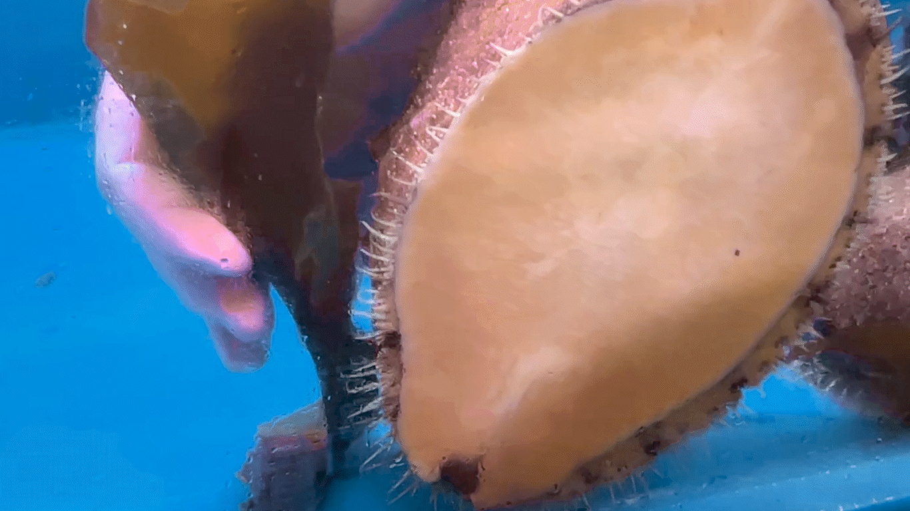
This white abalone is part of the 2013 “Rowlf” cohort, affectionately named after the lovable dog-like character from The Muppets. Inscribed on a small sign on the tank is its birthday: April 4th, 2013. I ask Artemio if he has a favorite abalone he works with. He says he does, and when he points it out, it is immediately clear why that abalone is his favorite;
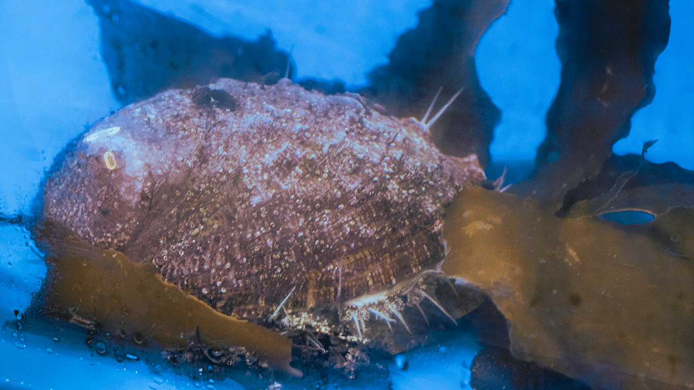
The white abalone in question sits stubbornly towards the back corner of the tank, ridiculously hoarding the kelp under its foot. I had laughed out loud at this little guy’s greedy personality. What's more, this abalone is part of the “Jafar” cohort, named after Disney’s famous villain from their animated classic film, Aladdin. Artemio shares that though this abalone is stationary today, on most days it is very animated and quite the sassy guy when interacting with volunteers.
Artemio warmly describes how abalone have large personalities, something which people might not expect—and it’s true! The abalone are incredibly endearing, and it's a lovely surprise. This had become a recurring sentiment heard through many conversations with scientists working in Abalone conservation. Jenny Hofmeister is a scientist working for the abalone conservation program at the California Department of Fish and Wildlife (CDFW). She affectionately recalled her experiences with the “silly little snail,” and gleefully described the joy of feeding wild abalone kelp when diving offshore. She described how incredibly cute and animated they are, and exclaimed, “I could do it all day!”

Everybody who works for the Cabrillo Marine Aquarium and the greater White Abalone Captive Breeding Program in California cares so deeply for these creatures; at Cabrillo, it is reflected in the staff’s affection, their focus, and adorned cohort names. The White Abalone Captive Breeding Program began in the early 2010’s, but White Abalone captive breeding efforts have existed since 2001—the year the white abalone became the first marine invertebrate to be federally recognized as an endangered species as they faced the risk of extinction (10). The White Abalone’s title was followed by the black abalone in 2009. The green, pink, and red abalone, though not federally recognized, currently also stand dangerously close to the cliff’s edge of extinction, registered on the IUCN’s Red List as critically endangered species as of 2021.
The abalone carries the weight of the world on its back, grappling with worsening environmental conditions to survive. Their scientific name, Haliotis, translates to “sea ear.” It is a very fitting name, as the abalone is constantly sensing and processing, acting as a gentle herbivorous mediator that paves the ocean floors, allowing for kelp beds to flourish. They are a vital force that allows their marine neighbors who also call the kelp beds home to thrive alongside them.
02 // Our generational neighbor
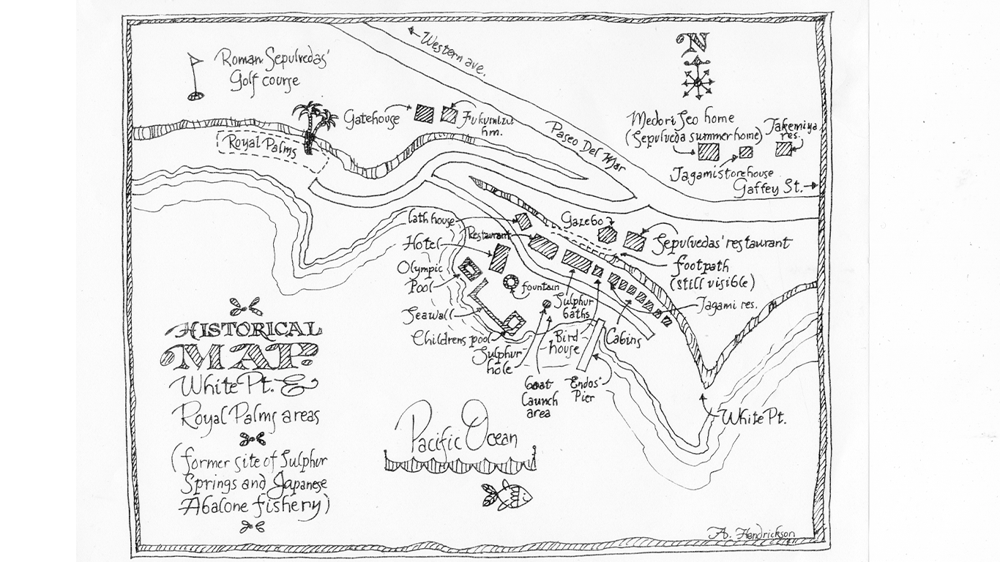
“The largest abalone shells [Dr. S. Bowers] has seen were from the shell mounds of San Nicolas
Island, where, according to Dr. S. Bowers, ‘millions multiplied by millions would be but a
beginning’”
— quote reported by Mrs, Burton Williamson from 9th Annual Report of the California State Mining
Bureau, 1890
In Los Angeles, our abalone neighbors flourished along the coast through the late 19th and early 20th century, grazing the rocks throughout the intertidal and subtidal zones. They were particularly prevalent along the California Channel Islands, Palos Verdes Peninsula, and the deeper waters of the Santa Monica bay’s kelp forests. But what exactly made these creatures so sought after that led to their decline?
Geographically, Los Angeles was a rapidly growing city located along the Pacific coast, and all five of the common native Californian abalone species call the Los Angeles coastline home. In a social context, abalone was treasured by many as a delicacy, for its stunning shells, and acted as the glue towards cultural foundations spanning across multiple communities and generations.
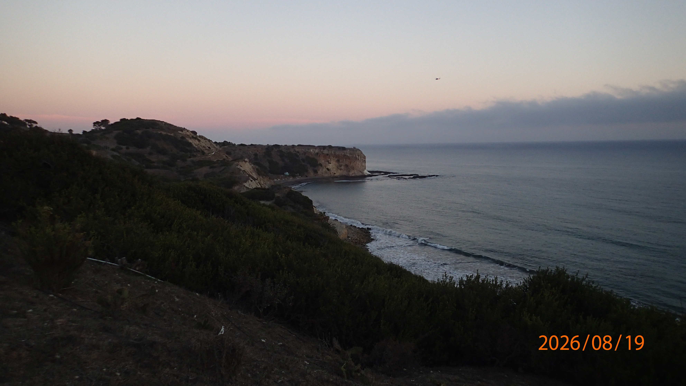
A New Life Abroad
To the Chinese and Japanese immigrants in the late 19th and 20th centuries, Californian abalone
acted as a sentimental window to home, and an opportunity to begin a new life abroad. The abalone
industry began with Chinese immigrants in the mid-19th century (12). California had just become the
30th state of the United States, and Los Angeles had been established as a municipality. Although
the abalone industry was much larger up north—Monterey County being the abalone capital—Los Angeles
was also home to vital abalone processing and fishing sites in White Point and Santa Monica Canyon.
Abalone was dried, sold, then exported to China and Japan. The success of this newfound industry
caught the public’s eye. Abalone shells became soap trays, jewelry, and pin trays, shipped all
across the globe (6).
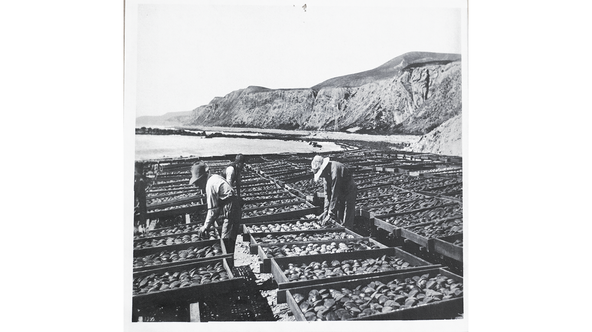
Japanese American Heritage
In Los Angeles, the abalone business began with 12 Japanese railroad workers in 1895 at White Point
beach in San Pedro (5). Their business reached so much success that in 1899, they had reported
collecting “60,000 lbs of dried Abalones and 30,000 lbs. of shells “ (6). With this success came
ecological imbalance; by 1903, the California Legislature began enacting protective laws,
prohibiting the commercial take of abalone based on size and depth (6). The abalone business across
California at this time was run by Japanese divers, as they had access to high-quality diving gear
that allowed them to collect abalone deeper in the ocean than competing fishers. The White Point
abalone business ended in 1906 after laws turned stricter and prejudiced articles ignited fear
towards Japanese immigrants and brought forth harassment of workers (13).
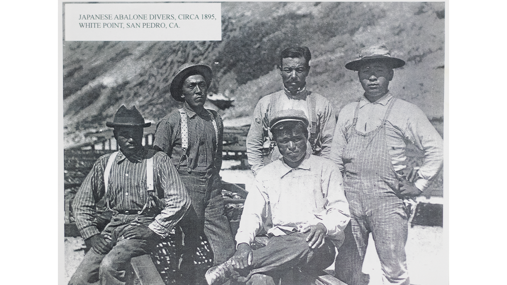
White Point fishermen moved to Terminal Island, which in the decades to come grew to a community of 3000 Japanese American fishers and families, and with their tuna fishing techniques and knowledge from home, became the tuna canning capital of the world(14). The White Point site had also become a Sulfur Hot Springs Resort in 1917, where the divers’ cabins turned into guest cabins (7). An article reports that this became a cultural staple, and Japanese Americans in Los Angeles from the time recalled the hot springs with nostalgic warmth (7). Abalone stood as the glue connecting the early Japanese American immigrant communities to Los Angeles. Tim Thomas, a fishery historian based in Monterey, describes how the Californian abalone was a pillar in the lives of Japanese fishers from Monterey, to the extent that their families’ shrines in Japan would feature the shells. This way of life was celebrated until the forced incarceration of Japanese Americans in internment camps during World War II abruptly disrupted their longstanding relationship with abalone, devastating the cultural traditions, livelihoods, and communities that had grown around it.
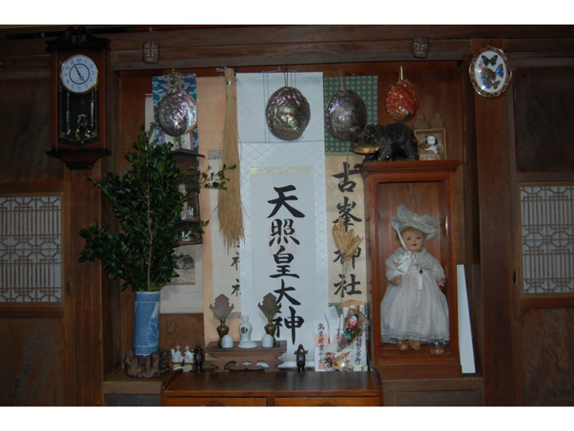
Indigenous Communities
Finally, a critical facet of Los Angeles and Abalone histories are the lives of Indigenous
communities, whose cultural practices, and reciprocal relationships with the marine environment and
abalone have spanned thousands of years. The Palos Verdes Peninsula, an area known as “Shwaaga,” was
home to at least 15 different Tongva Villages (15). In a particular example, Tongva communities
maintained deep connections to the coastal landscape surrounding what is now known as Abalone Cove.
As the name implies, the site was home to a highly abundant population of green and black abalone,
which favored the cove’s uniquely rocky shores (1). The abalone from the area held both material and
cultural significance for Indigenous communities. Meat provided food, while shells were used to make
tools, including fishhooks, bowls and jewelry. Tina
Calderon, cultureal bearer and educator of Tongva and Chumash descent, describes how
Abalone meant livelihood. She shares how abalone was used to bathe the young, as the holes of
the abalone allowed for water to pass through the bowl-shaped shell as a gentle shower. She
shares that abalone held spiritual importance as well, explaining that wearing abalone jewelry
would serve as a form of protection. Tina stresses that the entire shell was reused, over and
over. If the shell broke, it would be turned into fish hooks, and every part of the meat was
used. It was a critical part of her cultural teachings to never take more abalone than local
ecology could sustain.
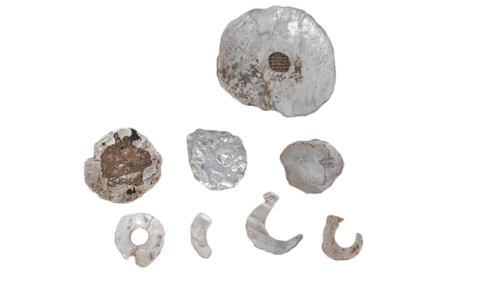
03// The coup de grâce
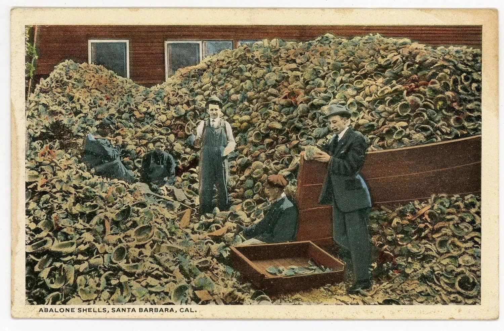
Through the first half of the 20th century, the state of California had tried to protect the dwindling abalone population multiple times. In 1903, legislation allowed the take of abalone measuring up to 15 inches. Two years later, this was changed again to 12 inches. In 1907, journalist and malacologist Mrs W. Burton Williamson criticized the legislation enacted to control the rapid collection of abalone, voicing how simply regulating the length of abalone caught for commercial use was “inadequate,” and that instead of allowing the industry to harvest abalone “every month every year,” they should regulate the industry by limiting the number of abalone collected annually (6). It takes abalone decades to reach a size of 15 inches, and the laws did not account for regeneration. Abalone continued to be taken for granted and their populations were decimated. In a classic example of the tragedy of the commons, nobody thought to protect their population for future generations to also share the presence of the abalone.
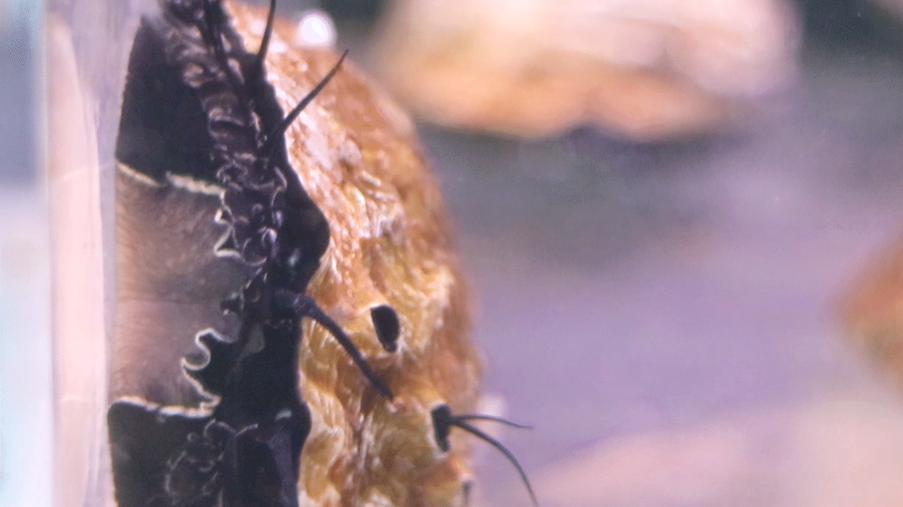
Post war till present brought a second level of hardship to our abalone neighbors. The introduction of scuba diving introduced an influx of recreational abalone fishing. At this same time, a multitude of environmental and social changes added high amounts of stress onto our round snail neighbors. By 1988, the National Park Service reported up to a 99% reduction in black abalone populations in areas of the Channel Islands—one of the last remaining locations of abalone populations (3).
Jose Bacallao, director of animal care at the Cabrillo Aquarium, shares such factors that
contributed to the abalone’s loss:
Loss of habitat, warming temperatures, changes in water chemistry, diseases, and poaching.
1. Loss of habitat
During the 1970’s-80’s, the Los Angeles Coastline, especially around Santa Monica and Palos Verdes,
became a site to dispose of municipal sewage waste. This depleted the kelp forests that our abalone
rely on. The loss of kelp beds came with a loss in habitat and a scarcity in food. At this same
time, sea urchin populations boomed as their main predator, the Sunflower Star, faced a fatal
disease called Sea Star Wasting Disease, which decimated their populations. Now, although abalone
were well protected by law, scarce kelp beds were devoured by urchins, leaving Abalone starved.
2. Warming temperatures & Changes in Water Chemistry
Warming temperatures added another layer of stress to the kelp beds that thrive in colder
temperatures. Rising ocean temperatures brought by climate change have left kelp in peril.
Alongside this, Jose had explained that warming ocean temperatures, as well as its changing water chemistry, brought by ocean acidification, is detrimental to the development and reproductive patterns of abalone. In a perfect world, captive breeding programs would selectively breed abalone that were less sensitive to these changes boost their chances at survival. Jenny Hofmeister presents that in the case of White Abalone, getting the abalone to reproduce is a finicky and often unpredictable process, and so selective breeding is not an option— at least, not yet.
3. Diseases
Unfortunately the decimation of the kelp forests was only the beginning. Starting in the 1980’s,
abalone unfortunately became acquainted with Withering Syndrome, also known as Abalone Wasting
Disease, which, as the name implies, was a dire development towards the abalone’s vulnerable
condition. Jenny Hofmeister explains that Withering Syndrome is a bacterial disease that leaves
abalone unable to eat, deteriorating their foot. She shares how at the height of the disease, she’d
sadly experienced abalone washing up onshore, as their weakened state disallowed their crucial
ability to grasp onto rocks.
In a more hopeful light, however, Dr. Alyssa Frederick, director of the Captive Abalone Breeding
Program shares that Withering Syndrome is less of a threat in the current day, and treatments have
been developed to help treat marine animals suffering from the disease, which is good news for
recovery efforts.
4. Poaching
Poaching lives on as one of the greatest concerns towards the abalones’ recovery. Reports in the
local news reported in 1967 that two groups of abalone hunters had collected a whopping 353 small
abalone less than 3 inches small during low tide, and this is just one instance of poachers that
were actually caught along the Palos Verdes coast (10). 20 years later, Drs. Susanne and Alan
Miller, who studied shoreline animals in Palos Verdes, reported that when Abalone Cove turned from
private to public land in 1975, abalone faced a 50-67% loss throughout the cove in two years. It
became an ecological reserve in 1978, which resulted in a rise in abalone. Yet three years later,
there was once again a steep decline due to Withering Syndrome. Finally in 1988, reports state that,
“The Millers were shocked to find virtually no abalone remaining at any peninsula site” (2). More
recently, in September of 2026, abalone poaching was
reported off Catalina Island
. It is a dire situation for the abalone and illegal take threatens an already precarious return.
Dr. Frederick shares the reality that in technical terms, the abalone are functionally extinct—there are currently too few in the wild for them to find each other and reproduce. Jose stresses that these are all man-made conditions. With the climbing temperatures brought by climate change, diseases will continue to be introduced to the environment, and leave marine organisms in vulnerable conditions.
He shares a dark concern: he is incredibly worried about the future of the abalone with the oncoming El Niño and rising ocean temperatures. In the preceding decades, people dove deeper down to fish for abalone as each species were depleted one by one— the progression starting with the red abalone, large and prominent in the rocky shores, then the pink abalone located much deeper, then the green and black again located on shore, then the white abalone, located the deepest out of the five (3). With the kelp forests becoming scarce, finding food for the captive abalone at the aquarium is even harder of a challenge than it was before— the team has to dive deeper and farther to find nutritious seaweed for the abalone and other marine animals in captivity to eat.
The future of the abalone is dire. But, there is hope to save the abalone, and we cannot let it go to waste. The reality is that we cannot undo the actions of those who came before us. The primary focus now should be on fixing our mistakes and saving our neighboring marine critters while we still can.
04// Reconciliation begins with remembering
The friendly abalone, treasured and respected by the coast and by Indigenous Peoples for thousands of years, has long been forgotten by the masses. We return to the present, where the decimation of their populations have resulted in their disappearance from the coast, and with such disappeared mass knowledge of their existence. For most, the term “abalone” is tied to an empty shell of their existence, rather than the gregarious creature that resided within them.
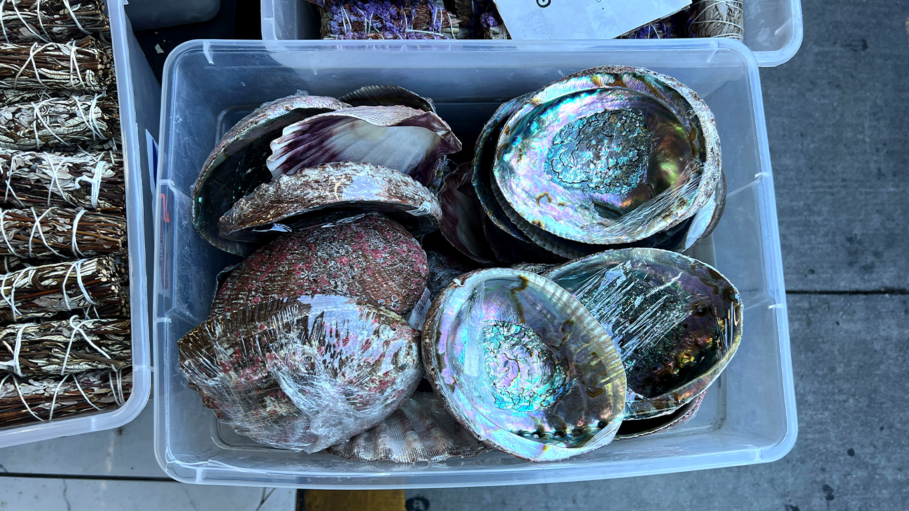
Today, those remaining with the closest relationships to native abalone are those who work tirelessly to bring them back. Where we used to dive for these charming creatures, we now dive to return abalone back to their ocean home.
Jenny is one of these divers, and works tirelessly with her team to outplant the White Abalone deep in the coastal waters off Los Angeles and San Diego. According to Jenny, the White Abalone are raised to about 2-3 years old most often up in Northern California, where cooler ocean waters are favored by the young mollusks. The outplanting is done entirely by scuba, and acclimatizing the abalone back to the wild holds its own methodical process— she says, “The wild is totally different from captivity,” as the young abalone must grow used to the unfamiliar surroundings and predators. They are reintroduced in an oyster cage securely attached to the ocean floor, and are left a bit of kelp as a parting “snack” before the divers and abalone go their separate ways. The outplanting process is lengthy and poses many challenges, but it's proven to be a successful one and a rewarding experience to those who work this craft.
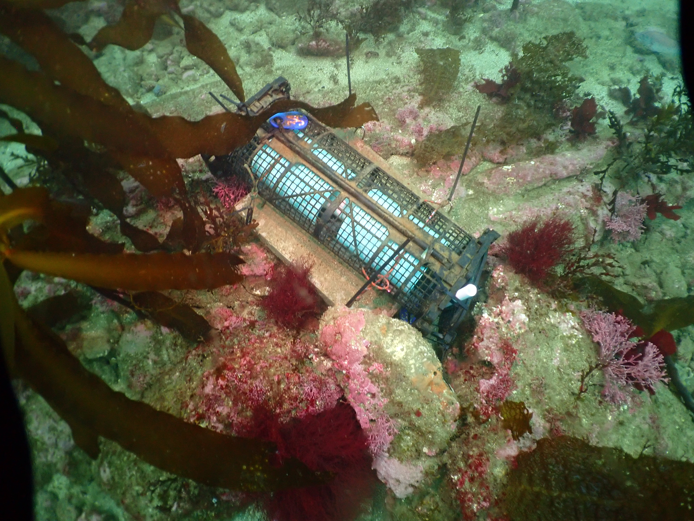
The preservation of abalone is a crucial step in reconciling with a creature who we haved almost pushed to extinction. Bringing them back also means the preservation of a symbol of heritage tied to the people who have built close relationships with the abalone.
To Japanese Americans, abalone are a symbol of a double edged sword, of a history equally dark yet celebrated. When the Second World War began, the Terminal islanders in Los Angeles and Abalone divers throughout California were forced to abandon their homes and businesses, marking the end of the Tterminal Iisland community and the abalone fishing lifestyle.
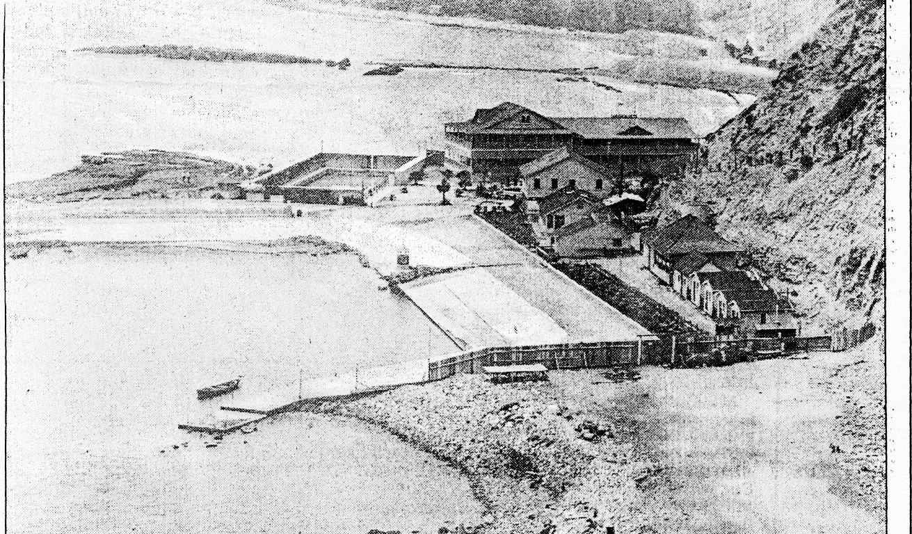
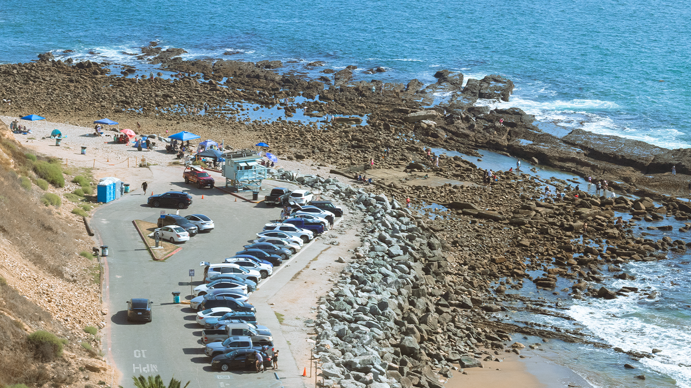
Top: Image courtesy of Palos Verdes Library District Local History Center. Bottom: White Point Beach, Image taken August 2026
Tommy Hattori, whose grandfather Roy Hattori first brought the white abalone to the attention of commercial fishing industry, said that for most of his life, Roy would barely talk about his experiences with abalone diving, much less about the white abalone, as there was too much pain attached to the loss of that facet of his life. Tommy explains how Roy was detained in Arkansas, then faced a forced draft to Hiroshima where he was deployed as a translator as he understood English and Japanese. When he came back to California, he was stunned to find the local abalone industry he had remembered had collapsed as a result of the forced detainment of his local community. The only life he knew was gone. Tommy is based in Los Angeles, and he dedicates much of his time to share his grandfather's cultural legacy, such as by co-organizing the Monterey Abalone Festival. He says his children have also begun expressing interest in the abalone, and every time they do, he feels connected with his grandfather. He is also currently pursuing a scuba diving license to get closer to his grandfather. He describes how Roy saw the world from the bottom of the ocean, and how he’d like to experience the world through his eyes. Tommy’s grandfather first brought the white abalone from the deep waters, and now, his grandson’s long-term goal is to learn to dive and eventually join the White Abalone outplanting efforts to bring them home from captivity and keep the memory of his family heritage and the abalone alive.
And last, a critical memory we had forgotten was long lost before the abalone’s commercial discovery. The Indigenous knowledge of mutual respect that allowed us and abalone to coexist for thousands of years, was disrupted by a colonized coast. Tina shares, “Water is life. But it can take your life away. So, you approach it with respect. You enter it with acknowledgement and introduce ourselves to the water before approaching. It will receive you in a good way.” Tina shares a roadblock in protecting the abalone. She explains, “Conservation is good. But respect is deeper. It isn't inherent.” She voices her support towards ecological preserves, as they exist purely for nature’s sake. It is a critical part of her cultural teachings to never take more than you need, and no more than local ecology could sustain. She explains, “When you're not attached and you don't look at [nature] as reverence, you look at it as your playground. You don't think about the people who come after you.”
She shares that when people lose the fundamental knowledge of respect and reciprocity towards nature, it results in the loss of a longstanding traditional practice that understood the relationship between people and the sources of their sustenance. “[Abalone] is good for our bodies. When you buy from a restaurant, or market, there is a huge disconnect.” She also acknowledges that access to the ocean is also relative to socioeconomic disparity, which further highlights the importance of her work in cultural education. In her cultural teachings, abalone is learned as family, under our collective mother, the ocean. They were not meant to be commodified. The perception that the abalone are our equals has been lost. Recovering such is the critical first step to recover their populations.
To save the abalone, everyone must remember abalone as our equal.
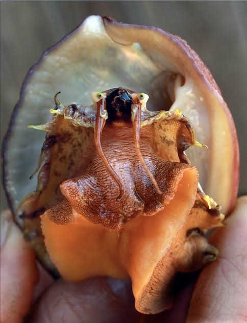
05 // A beacon of hope
Amongst tragedy, lies a hopeful fact: abalone are bringing people together in the careful effort to save them. There is a strong culture of collaboration and partnership between abalone conservation organizations and programs. If one organization were to ever hypothetically lose funding for their captive breeding program, another, such as Cabrillo Marine Aquarium, could step in and take over. There is a very strong support network between the Cabrillo aquarium, NOAA, CDFW, UC Davis Bodega Laboratory, and Aquarium of the Pacific, just to name a few, all under the passionate mission to save the white abalone.
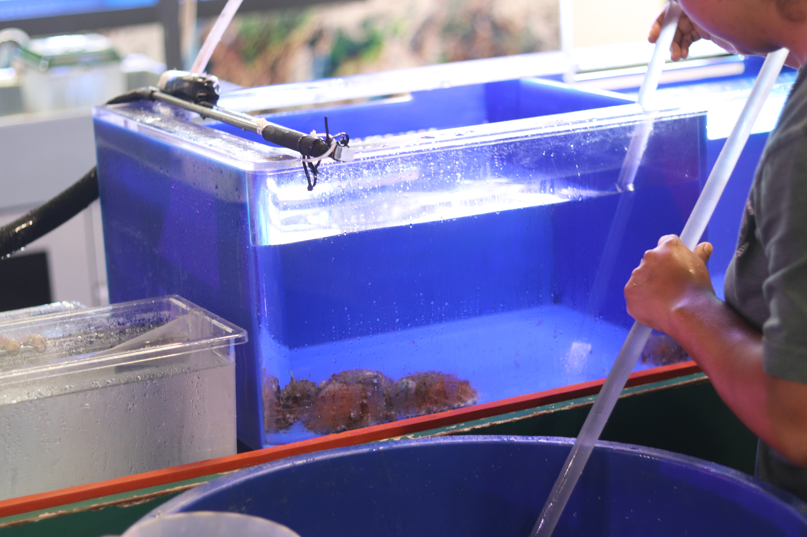
These collaborative conservation efforts are working. Both Jose and Dr. Frederick similarly state that captivity numbers are growing exponentially, and more and more abalone are being released and acclimated to the wild every year. Dr. is very firm in her belief that the white abalone is a unique case for an endangered species on the Red List—they have a real chance at coming back. The main barrier is funding, and a lack of awareness surrounding the abalone’s condition, much less its existence.
Jose says that when partnering conservation teams check on the white abalone that are released into the ocean, they are still around and thriving. Jenny also affirms this news; during an outplanting site visit she and her team had found a cluster of white abalone they had released from captivity, still thriving and grazing the ocean floors. These captive breeding programs teach us that collaboration works. We all have a shared responsibility in undoing the harms that humans have placed onto nature, because only we have the power to fix and change our collective harms. We must ensure that future generations will have the security of a healthy ocean. Through remembrance, we can pass on that respect and work toward reconciliation. And the abalone truly cannot come back without our help.
06 // Looking to the Future
So how can we help?

For starters
1. Spread the word about the abalone!! Their condition is critical, and they need our attention.
2. Eat abalone: This might sound counterintuitive, but proceeds from farmed abalone (not wild), such
as the Cultured Abalone Farm in Goleta, come back to
captive breeding programs.
3. Report poaching, if encountered, on the CalTip hotline (1-888-334-CALTIP).
4. Advocate for the support and protection of our marine protected areas.
5. Donate to the Captive Breeding Program!
6. Treat nature with respect and reciprocity. Practice giving back, protecting nature, and not
taking or consuming more than we need from our natural world.
Everyone remains hopeful about the future. It's important that we do too: in our futures, and in ourselves. Tina says, “If she talks to 65 people, 70% want to help. The good-hearted people overwhelm the ones that are less.”
It is a long journey to undo what was done, to save our abalone friends. But one day, If we all seek to help where we can, abalone will one day make their way back to their ocean home, and find themselves guided by their natural curiosity outside their temporary captive tanks.
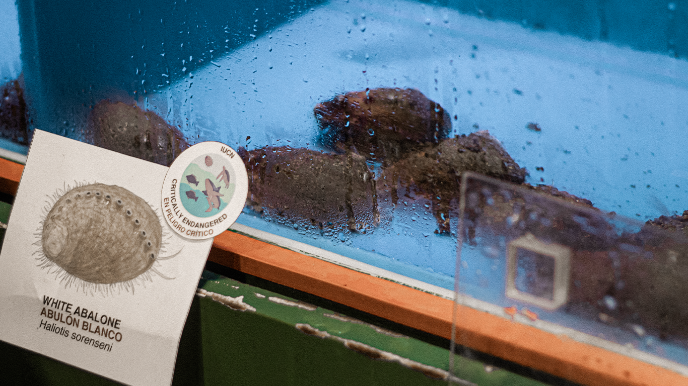
Works Cited
01. Palos Verdes Library District, Local History Center, Point Vicente Interpretive Center Docent
Research Papers Collection, Abalone Industry File, p. 190; Laura, Vince, “Abalone of Abalone
Cove” 1991.
02. Palos Verdes Library District, Local History Center, Point Vicente Interpretive Center Docent
Research Papers Collection, Abalone Industry File, p. 204; Ackerman, Jones; “southern
california abalones,” 1991.
03. Palos Verdes Library District, Point Vicente Interpretive Center Docent Research Papers
Collection, p. 221; Cooper, Alison, “The Rise and Fall of the Abalone: a Brief History of the
Abalone Fishing Industry in California,” 1992.
04. Palos Verdes Library District, Local History Center, Point Vicente Interpretive Center Docent
Research Papers Collection, Abalone File, p. 530; Keigharn, Diana, “Abalone: classification,”
2000-2026.
05. Palos Verdes Library District Local History Center, Subject & Biographical File
Collection; Abalone Industry File, Almeida, Arthur, “White Point Abalone Fishery,” San Pedro
Bay Historical Society Shoreline, 1978 May.
06. Palos Verdes Library District Local History Center, Subject & Biographical File
Collection; Abalone Industry File; Williamson, Mrs. M. Burton, “Abalone Industry of the
California Coast,” circa 1907, p. 487.
07. Palos Verdes Library District, Local History Center, Subject & Biographical File
Collection; White Point File, Gusaitis, Rasa, “A Historic Cove Comes Back to Life,” California
Coast & Ocean Magazine, 1997 Summer.
08. Palos Verdes Library District, Local History Center, Subject & Biographical File
Collection; White Point File, Hendrickson, A., Approx. 1920-1943.
09. Palos Verdes Library District, Local History Center, Subject & Biographical File
Collection; White Point File; Rasmussen, Cecilia, “L.A. Scene / The City Then and Now,” Los
Angeles Times, April 6, 1992.
10. Palos Verdes Library District, Local History Center, Subject & Biographical File
Collection; Abalone Industry File; Lukas, Betty, “Trouble from Abalone Haul,” October 11,
1967.
11. California Department of Fish and Wildlife. “White Abalone Recovery Project.” CDFW Shellfish
Health Laboratory. https://wildlife.ca.gov/Conservation/Laboratories/Shellfish-Health/Recovery-Project.
12. Piotrowski, Dennis, and Monique Sugimoto. “Portuguese Bend Thrived as a Whaling Station.” Palos
Verdes Library District. https://www.pvld.org/localhistory/newspaperarticles/portuguesebendwhalingstation.
13. Redmon, Michael. “Chinese Abalone Fishermen.” Channel Islands National Park, National Park Service,
7 June 2016. https://www.nps.gov/chis/learn/historyculture/abalone-fishing.htm.
14. Palos Verdes Peninsula Land Conservancy. “Japanese Abalone Divers.” White Point Nature Education
Center and Preserve, n.d.
15. National Park Service. Manzanar National Historic Site: Historic Resource Study/Special History
Study. Chapter 9, “Historical Background of the Evacuee Population at the Manzanar War
Relocation Center.” https://www.npshistory.com/publications/manz/hrs/chap9.htm.
16. Tabor, Steve. “Give Honor to Whom Honor Is Due: Tongva Monument Unveiled at Abalone Cove Park.”
Palos Verdes Pulse, October 26, 2021. https://www.palosverdespulse.com/blog/2021/10/26/give-honor-to-whom-honor-is-due-tongva-monument-unveiled-at-abalone-cove-park-by-steve-tabor.